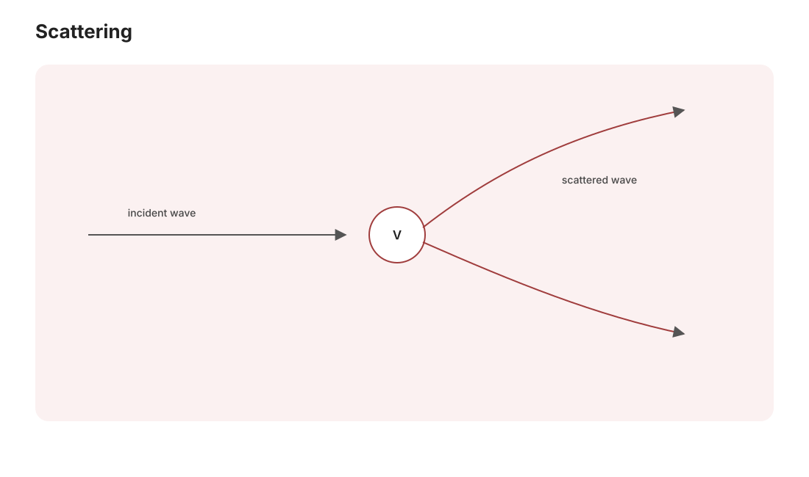

高量 II · 散射理论
对标：Sakurai §6 / Griffiths §11 ｜ 前置：qm-04（黄金规则）、mp-01（球 Bessel/Green 函数） 微观物理的几乎全部实验知识来自散射（Rutherford 发现核、深度非弹发现夸克、LHC 的一切）。本页立起散射的语言（截面与散射振幅），配齐两大计算引擎：分波法（低能，少数相移说尽一切）与 Born 近似（弱势，散射振幅 = 势的 Fourier 变换）。

1. 语言：截面与散射振幅
远场边界条件（定态散射波函数）：
（入射平面波 + 出射球面波——\(\frac1r\) 保概率流守恒，em-03 辐射场 \(\frac1r\) 的量子同款。）微分截面【推导一行】：出射流/入射流之比给
——理论算 \(f\)、实验数计数率，在 \(|f|^2\) 处握手：散射理论的全部任务 = 求散射振幅。
2. 分波法（低能引擎）
中心势下按角动量分解（球谐展开，mp-01）：入射平面波 = 各 \(\ell\) 分波的叠加；势只能给每个分波一个相移 \(\delta_\ell\)（弹性散射幺正性的全部自由度——"势的指纹是一串相位"）：
【骨架】 自由径向解的远场相位 vs 有势解的远场相位之差定义 \(\delta_\ell\)；按 \(P_\ell\) 正交性逐项比对系数。\(\blacksquare\)
为什么低能只需几个分波【推导直觉】：碰撞参数 \(b \sim \frac{\ell}{k}\) 超出势程 \(a\) 的分波"擦不到"势——\(\ell \lesssim ka\) 才参与：低能（\(ka \ll 1\)）只剩 s 波（\(\ell = 0\)）——一个相移描述一切低能散射（冷原子物理的散射长度 \(a_s = -\lim\frac{\tan\delta_0}{k}\)：BEC 相互作用的唯一参数——sm-03 的冷原子在此接上理论接口）。
幺正性红利：光学定理 \(\sigma_{\text{tot}} = \frac{4\pi}{k}\,\mathrm{Im}\,f(0)\)【骨架：概率守恒 = 前向振幅的干涉亏损】——"总吸走多少"由前向散射的影子记账（衍射阴影的量子表述）。共振：某 \(\delta_\ell\) 冲过 \(\frac\pi2\) ⇒ 该分波截面打满 \(\frac{4\pi(2\ell+1)}{k^2}\)——Breit–Wigner 峰【引用】：粒子物理"发现新粒子 = 看到共振峰"的原型（pp 线的 Z 玻色子、Higgs 都是这么找到的）。
3. Born 近似（弱势引擎）
积分方程形态：用 Green 函数（mp-01 出射波 \(G \propto \frac{e^{ik|\mathbf r - \mathbf r'|}}{|\mathbf r - \mathbf r'|}\)）把 Schrödinger 方程改写为 Lippmann–Schwinger 方程；一阶迭代（用入射波替真解）：
——散射振幅 = 势的 Fourier 变换（动量转移 \(\mathbf q\) 处的分量）。
三重读法：① 高能/弱势适用（与分波法互补——低能用相移、高能用 Born）；② "散射实验 = 给势拍 Fourier 照片"——晶体衍射（solid-01 倒格子成像）、X 射线看电子密度、深度非弹看质子内部（部分子分布——pp 线），全是同一句话在不同能标的执行；③ 屏蔽库仑势（Yukawa）\(V \propto \frac{e^{-\mu r}}{r}\) 的 Born 振幅 \(\propto \frac{1}{q^2 + \mu^2}\)——\(\mu \to 0\) 回收 Rutherford 公式 \(\frac{d\sigma}{d\Omega} \propto \frac{1}{\sin^4(\theta/2)}\)（与经典/精确量子结果神奇一致【引用】——库仑散射的三重巧合）；这个 \(\frac{1}{q^2 + \mu^2}\) 正是 Feynman 传播子的原型（qft-02："交换质量 \(\mu\) 的粒子 = Yukawa 势"——汤川由此预言介子）。
4. 练习与要点
例 1（硬球散射） 半径 \(a\)、低能：\(\delta_0 = -ka\)（径向解在 \(r=a\) 归零的边条），\(\sigma = 4\pi a^2\)——几何截面的四倍（波绕射效应：量子"看到"的球比几何大）；高能极限 \(\sigma \to 2\pi a^2\)（几何 + 衍射影各一份【引用】）。
例 2（Born 亲算 Yukawa） 代 \(V = V_0\frac{e^{-\mu r}}{r}\) 入 Born 积分（角向先积、剩一维指数积分）得 \(f \propto \frac{1}{q^2 + \mu^2}\)——研究生量子的标准手算，qft 传播子的预演，值得完整写一遍。
例 3（分波数估算） 中子（10 MeV）打核（\(a \sim 5\) fm）：\(ka \approx 3.5\) ⇒ 约 4 个分波参与——分波法适用边界的数量级手感；LHC 能标则 \(ka \sim 10^5\)：改用 Born/部分子语言——两引擎的分工在数字里。\(\blacksquare\)
下一页：量子力学的第三种表述——路径积分（对一切历史求和）与密度矩阵（开放系统与退相干的语言），高量收官。